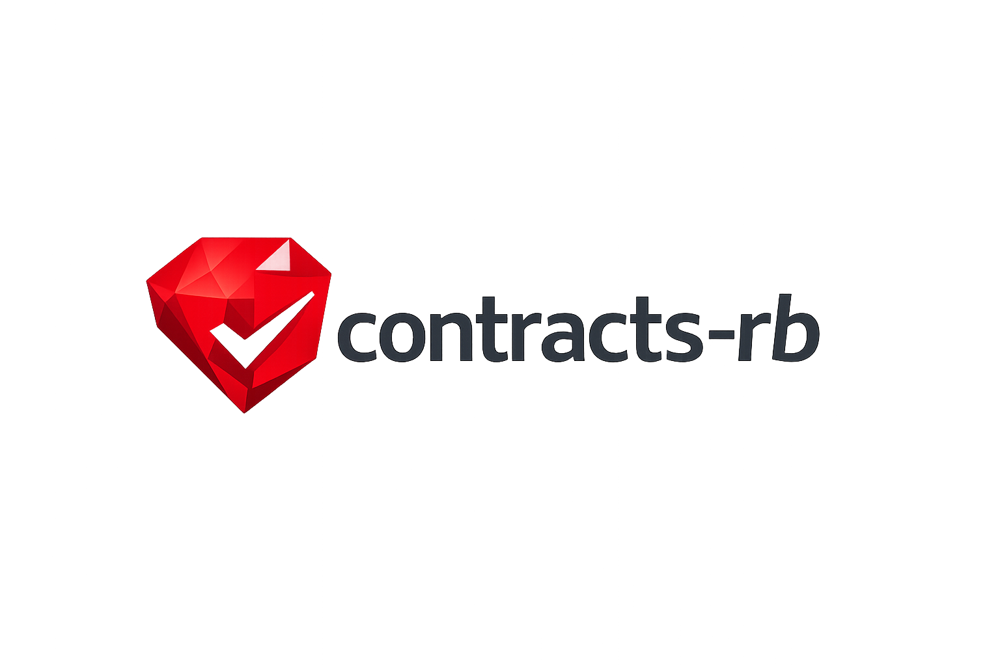

Method contracts
Validate parameters, preconditions, return values, and postconditions with idiomatic Ruby blocks.
contracts-rb adds lightweight behavioral contracts to Ruby methods and objects—without turning Ruby into a static type system.

Validate parameters, preconditions, return values, and postconditions with idiomatic Ruby blocks.
Capture immutable before-state snapshots, preserve invariants, and declare permitted changes.
Sample enforcement, redact sensitive values, configure failure modes, and inspect contracts through the CLI.
gem "contracts-rb"
class Account
include Contracts
attr_reader :balance
invariant { balance >= 0 }
contract :withdraw do
params amount: Numeric
requires { |amount:| amount.positive? }
observe :balance
changes :balance
returns Numeric
end
endRead the README for snapshots, exceptions, inheritance, RSpec, Rails, and CLI usage.